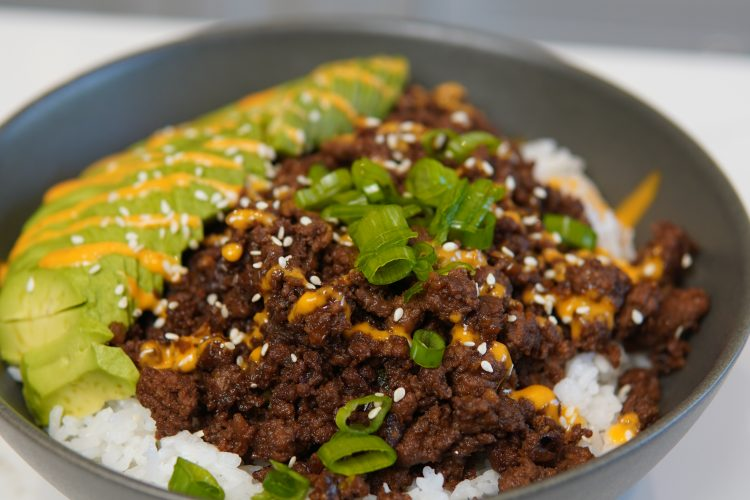

Ground Beef

The perfect meal-preppable beef bowl!
Ground beef is an ingredient that many have in their fridge, but find it difficult to make it taste good.
This easy ground beef rice bowl is inspired by Korean bulgogi beef.
The savory and umami flavors from soy and oyster sauce blend perfectly with the sweetness of honey
and mirin. I top my rice bowl with some sriracha mayo, avocado, sesame seeds, and green onions.
Ingredients:
Bowl:
- 600g lean ground beef
- 1 tbsp oil
- 1 small yellow onion
- 6 cloves garlic
- 1.5 tbsp soy sauce
- ½ tbsp dark soy sauce
- ½ tbsp oyster sauce
- ½ tbsp gochugaru (Korean chili flakes)
- 1 tbsp honey
- ½ tbsp mirin
Garnish:
- green onion
- seasame seeds
- avocado
Sriracha mayo
- ½ cup mayo
- 2 tbsp sriracha
Directions:
- Finely dice your onions and garlic.
- Into a hot pat add oil then your chopped onions and garlic. Stir 30 seconds.
- Make room in the center of the pan and add the ground beef. Cook about 5 minutes
or until 90% cooked.
- Season with soy sauce, dark soy sauce, oyster sauce, chili flakes, honey, and mirin.
Continue cooking another 2-3 minutes while stirring to combine.
- Mix together mayo and sriracha to make sriracha mayo.
- Top white rice with the ground beef, add avocado, top with sriracha mayo, green onions, and sesame seeds.